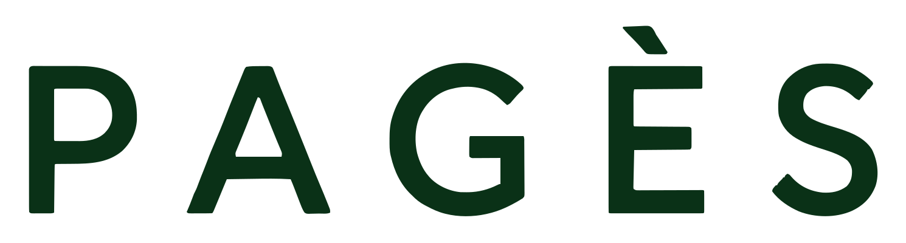

Tu lugar en Pagès
Cultivas con esfuerzo.
Vende con más oportunidades.
Ofrece tu cosecha y tus excedentes a compradores profesionales. Comparte lo que tienes disponible, a tu precio y con tus tiempos.
- Publica productos y cantidades disponibles.
- Da visibilidad a tu finca y al origen de tu cosecha.
- Prepara tus ofertas con ayuda de WhatsApp.